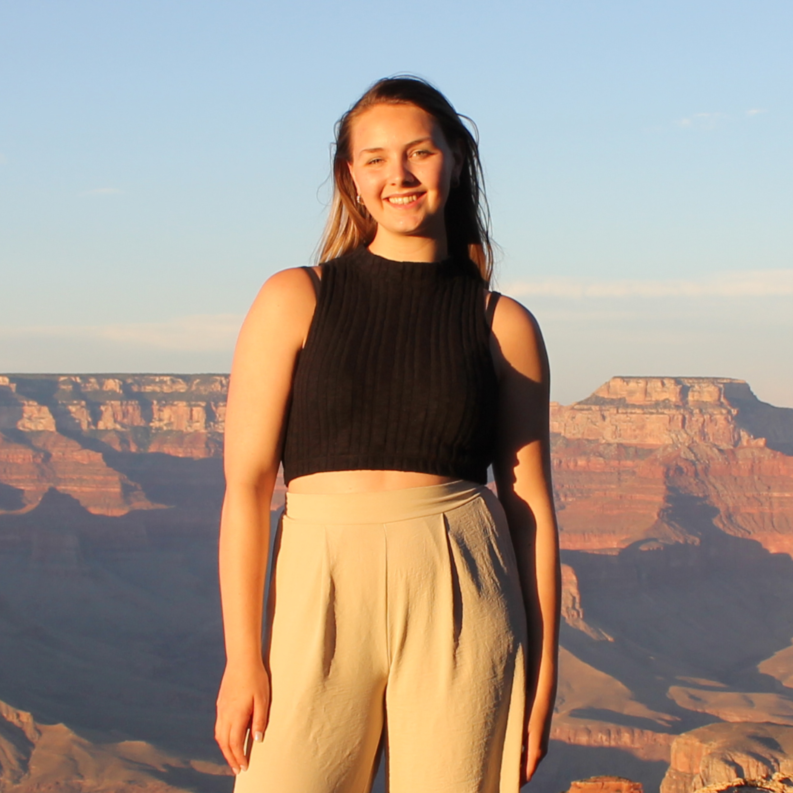

Hi, I'm Noa
UX designer & researcher
looking for a job in UX design or research
About me
My studies
In 2019, as a 17-year-old student, I moved to the big city of Amsterdam. I come from a village in the eastern part of the country. Nervous and excited, I began my studies in Communication and Multimedia Design at the Amsterdam University of Applied Sciences. I chose these studies because it aligned with my hobbies. However, I found myself doing very little related to my hobbies during the studies, graphic design and illustrating. I discovered that I enjoy working on User Experience Design and Research the most. What I particularly like about this field is speaking with users and stakeholders and collaborating to create things. Providing a sympathetic ear for users and stakeholders and take real action to drive change is what I like doing best.
Board member of my student association
In the second year of my CMD program, I served on the board of the student association, IAM Core. As the Treasurer, I managed the finances, created budgets, and supervised two committees. It was an educational experience during which I learned how to organize and facilitate events.
My hobbies
In my spare time, you can find me at the gym. I engage in strength training with friends about 3 to 5 times a week. Additionally, I enjoy going for walks, attempting to read occasionally, and often trying out new hobbies. Recently, I tried diamond painting, which I must say is very relaxing and definitely worth a try.
My character
Describing oneself is always challenging, but I've done my best to provide you with a good picture. I believe my strengths lie in communication, strategic thinking, and being eager to learn. When working in a team, I always strive to communicate effectively. Also, I value creating a strategic plan for how we approach tasks as a team. I also believe that working in teams offers great opportunities for learning. I enjoy observing how others tackle problems, create designs, and present their ideas. As a starting professional, I find this aspect crucial for personal growth. I'm also goal-oriented; I take pleasure in working towards a final result in the most efficient manner. However, my character of course does have its flaws. I can still be insecure about the work I make. Knowing that I'm not the best at designing can make me doubt whether my work is comprehensive, accurate, or aesthetically pleasing enough. This is something I'm actively working on improving.
My work
During my studies I worked on many projects. These are the projects I liked working on the most.
Rythm Ritje
graduation project
A11y
delve into accessibility
Carddeck
behavioral principles
Contact
Would you like to get in touch sometime? Please don't hesitate to send me an email or a text message. There's always room for a chat!
